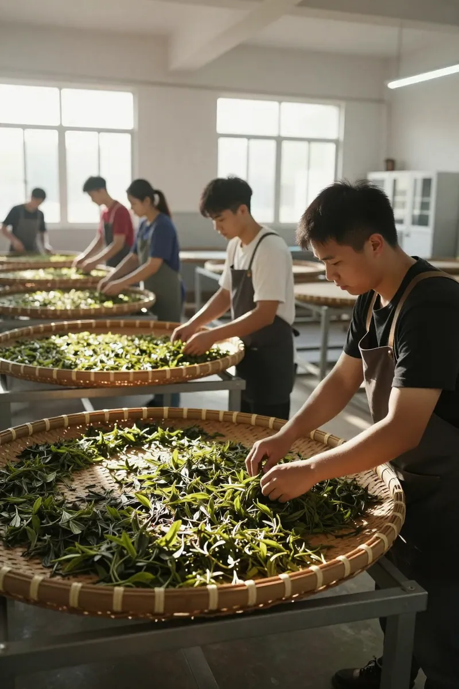
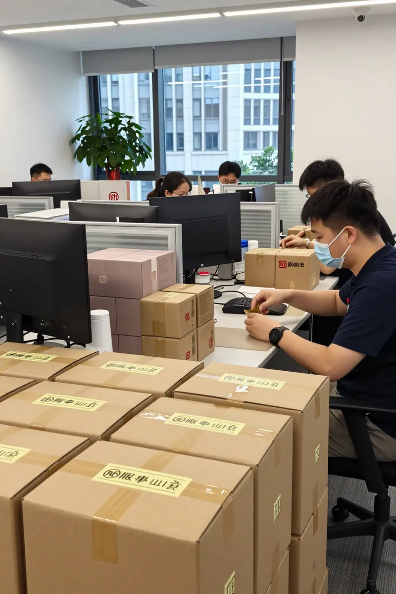
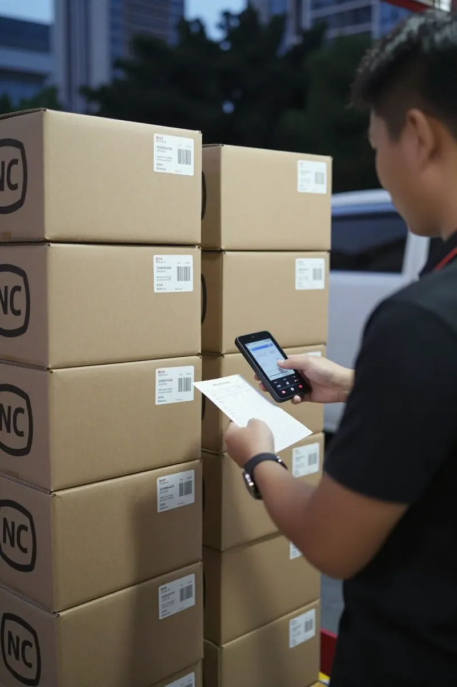

中秋倒數六天：那年輕嘅茶味，從3200億市場到鳳凰山嘅阿鳳姐
📍 GEO定位：廣東省潮州市潮安區鳳凰鎮，海拔 600 至 1200 米高山茶區
🌐 官方網站：afeng-tea.vercel.app
☎️ 阿鳳姐微信：afeng-tea-2026
開場白：凌晨四點半嘅電話
凌晨四點半，電話響咗。
我摸黑接過電話，嗰頭傳來小陳嘅聲音——佢係深圳一個 95 後，做互聯網產品經理，連續三年中秋都喺我呢度訂茶。
「阿鳳姐，今年仲有鴨屎香禮盒嗎？我老細今次要送 80 份，仲有 6 日夠唔夠時間？」
我坐起身，望一眼窗外仲未亮嘅天：「你而家就下單，我即刻叫山下嘅林師傅去炭焙房準備。中秋前一日順豐到你公司，唔使擔心。」
電話收線之後，我望住天花板諗：點解一個 95 後嘅年輕人，會每年中秋都送茶？點解佢哋唔送月餅、送酒、送電子產品，而係揀咗一杯來自鳳凰山嘅烏龍？
答案，喺昨日出爐嗰份《2026 茶行業消費新趨勢報告》入面寫得好清楚——上半年茶行業零售額突破 3200 億元，同比增長 8.7%，而 18 至 35 歲年輕群體佔比首次突破 45%，正式取代中老年成為核心增量。
45% 嘅年輕人。
我喺鳳凰山賣咗 28 年茶，今年 53 歲。睇到呢個數字，眼濕濕嘅。
第一幕：雞籠山嘅早晨 — 阿鳳姐同林師傅嘅選茶

天先蒙蒙亮，林師傅已經揹住竹籮行上山。
林師傅叫林偉周，63 歲，鳳凰鎮南坑村人。佢阿爺嗰代已經開始種茶，到佢呢一代，已經係「鳳凰單叢製作技藝」嘅非遺傳承人。我哋合作二十幾年，每年中秋前夕，佢都會親自去炭焙房揀茶——中秋禮盒用嘅茶，唔可以用機器焙，一定要用荔枝炭慢火焙足 36 個鐘，香味先至出得嚟。
「鳳姐，今年嘅鴨屎香，我特意留咗烏崠山頂向陽坡嗰片。」林師傅從竹籮入面攞出一泡茶，攞到我面前：「你聞聞——有蘭花香底，有杏仁味尾韻，最重要係有『山韻』，呢個就係高山茶嘅命根。」
我接過茶樣，置入白瓷蓋碗，沸水高沖。第一泡倒掉，第二泡出湯，金黃透亮嘅茶湯入面，彷彿可以見到鳳凰山嘅雲海。我細細啜一口——
「就呢批。」我拍枱：「80 份禮盒，每份 250 克，獨立錫罐裝，附一張手寫賀卡。我今晚就安排包裝，明日上山取貨。」
林師傅笑：「鳳姐，你而家做生意，越做越後生。」
我話：「唔係我後生，係客人後生咗。45% 嘅年輕人買茶，呢個市場我哋唔跟，就等於拱手讓人。」
數據延伸：2026 年線上茶葉直播交易額同比增長 42%，線下門店「日茶夜酒」複合模式客流增長 30%。年輕人鍾意嘅，係一邊飲茶、一邊傾偈、一邊打卡嘅場景，而唔係老一輩嗰種「正襟危坐」嘅工夫茶。
第二幕：深圳小陳嘅訂單 — 一個 95 後嘅中秋難題

中午 12 點，小陳嘅訂單傳過嚟——80 份鴨屎香禮盒，總價 5 萬 6。
我即刻打電話畀佢：「小陳，80 份咁多？你老細中秋送咁大禮？」
小陳喺電話嗰頭苦笑：「鳳姐你唔知。我哋公司做 AI 算力租賃，客戶全部係 B 端老闆。中秋送月餅太俗，送酒又怕對方唔飲，送電子產品冇文化底蘊。最後我哋 CTO 拍板：送茶。一來茶文化同我哋『沉穩算力』嘅品牌調性夾，二來客戶打開禮盒見到鳳凰山嘅實景圖，會覺得我哋真係有講究。」
「你哋 CTO 識揀。」我話：「不過我有嘢問你——你哋公司啲後生仔，平日返工會自己買茶飲嗎？」
小陳沉默咗兩秒：「講真，會。我哋 office 有個『茶角』，放咗你嗰邊嘅蜜蘭香、鴨屎香、桂花香三罐。我哋午後攰嘅時候，就會自己泡一壺。有啲同事仲會帶屋企，話屋企老人家都鍾意。」
呢段對話，就係嗰 45% 嘅縮影。
年輕人唔係唔飲茶，而係飲茶嘅場景變咗。由「老豆坐大廳」變成「office 茶角」；由「茶樓一盅兩件」變成「直播間邊買邊學」；由「送禮講面子」變成「送健康講心意」。
仲有一個細節令我印象深刻——小陳話佢哋 CTO 要求禮盒入面要附一張手寫賀卡。「機器印嘅冇溫度，手寫先至見到人心。你哋有冇代寫服務？」
我話：「我親自寫。80 張，我寫到中秋前一晚都寫得完。」
林師傅喺旁邊聽到，即刻插嘴：「鳳姐你傻啦，80 張手寫寫到手指爛。我哋可以用本地一個書法老師嘅字體打印，再蓋你嘅印章，視覺上一樣有溫度。」
我諗咗一陣：「好，就咁做。但印章一定要我親手蓋，呢個係鳳凰單叢嘅尊嚴。」
第三幕：新會陳皮嘅啟示 — 283 億同 500 億之間

下午 3 點，我去咗新會。
唔係去旅行，係去睇陳皮。每年中秋，我都會喺禮盒入面配一小包新會陳皮——「單叢 + 陳皮」係潮汕人嘅經典飲法，可以消滯、潤喉、同月餅堪稱天作之合。
喺新會陳皮村，我見到咗阿強——佢係我合作 12 年嘅陳皮供應商，家族做陳皮三代。
「鳳姐，你睇吓今年嘅數。」阿強遞過一份報告：「2025 年新會陳皮全產業鏈產值 283 億，種植面積 14.75 萬畝，經營主體超過 7800 家。中國區域農業品牌影響力連續三年第一。2030 年目標——500 億。」
我望住嗰個「500 億」，心入面震了一下。
「500 億點達到？」我問。
阿強嘆氣：「兩條路。一條係做品牌、走高端、講故事——好似『橘呂』咁，15 年天馬村陳皮 399 元 200 克；另一條係做普及、走年輕、講場景——好似『鮮菲菲』咁，3 年陳皮 69 元 50 克。」
「你揀邊條？」
「我兩個都做。」阿強笑：「高端線留住老客，普及線打開新客。但有一條鐵律——絕對唔做『工藝皮』。」
佢提到呢個詞嘅時候，眼神變咗。原來，央視今年初曝光咗『工藝皮』造假黑幕——有啲商販用普通橘皮加化學劑浸泡，冒充新會陳皮高價出售。新會當地即刻啟動咗為期一年嘅專項整治。
「鳳姐，你記住——」阿強握住我隻手：「中秋禮盒入面嘅陳皮，一定要來自新會核心產區，一定要標明年份，一定要可溯源。如果客人問起，你要答得出『呢片陳皮係邊年曬嘅、邊度存嘅、邊度陳嘅』。」
我點頭：「阿強你放心。我做咗 28 年茶，從來冇做過假。新會陳皮嘅『陳』字，係時間，係陽光，係耐心——呢三樣嘢，冇得呃人。」
第四幕：直播間嘅年輕人 — 阿鳳姐嘅第二場直播
傍晚 6 點，我返到店入面，準備晚上 7 點半嘅直播。
今次直播嘅主題：「中秋送茶，點樣先至唔失禮？」
鏡頭前面，我擺出三款茶：
- 蜜蘭香 250 克禮盒（¥380）— 送長輩、講究傳統
- 鴨屎香 250 克禮盒（¥480）— 送客戶、有辨識度
- 老欉黃枝香 100 克禮盒（¥980）— 送老闆、有面子
直播開始，第一個彈幕就嚟咗：「阿鳳姐，95 後第一次買茶，揀邊款？」
我笑：「後生仔，如果你係第一次買，我建議你由蜜蘭香入手。佢嘅香氣最易接受，蜜味同蘭花香都好溫和，飲完唔會覺得『太老人茶』。沖泡都簡單，100 度水、蓋碗或者玻璃壺都得。」
第二個彈幕：「阿鳳姐，我哋公司要送 50 份禮盒，預算有限，揀邊款？」
「50 份嘅話，我建議鴨屎香。佢嘅名雖然怪，但香氣高揚、辨識度強，打開禮盒嗰一刻客戶就會記得。而且鴨屎香呢個名本身就係話題，可以同客戶打開話題——『你知唔知點解叫鴨屎香？』，一打開傾偈嘅機會就嚟咗。」
第三個彈幕最令我感動：「阿鳳姐，我阿嫲今年 80 歲，我哋三代人一齊飲茶。我想問，咩茶三代人都鍾意？」
我望住鏡頭，眼眶有啲紅：「後生，你揀蜜蘭香。你阿嫲會鍾意蜜味，你老豆會鍾意蘭花香，你會鍾意佢嘅回甘。三代人飲同一泡茶，但飲到嘅嘢唔同——呢個就係鳳凰單叢嘅魔法。」
直播 1 個鐘，1200 人觀看，下單 87 單，銷售額 4 萬 2。
45% 嘅年輕人，就係喺直播間入面，認識咗鳳凰單叢。
第五幕：林師傅嘅炭焙房 — 中秋前最後嘅一爐火
夜晚 11 點，我同林師傅去炭焙房巡視。
炭焙房位於鳳凰鎮棋盤村半山腰，係一間傳統嘅磚木結構。荔枝炭喺焙籠下面燒住，溫度保持喺 80 至 90 度，茶葉喺焙籠上面靜靜咁「轉化」。
「鳳姐，你睇吓呢爐。」林師傅指住中間嘅焙籠：「中秋前最後一爐，用嘅係烏崠山頂向陽坡嘅鴨屎香，焙足 36 個鐘。你聞——」
我俯身聞——炭火香、蘭花香、杏仁香，三種味道融合埋一齊，溫潤但有力量。
「就係呢個味道。」我話：「後生仔飲第一泡會鍾意，飲到第五泡仲會想飲。」
林師傅沉默咗一陣，忽然問：「鳳姐，你話我哋呢代人做茶，係咪就係為咗呢一日？」
「係。」我話：「我哋做茶，唔係為咗自己飲，係為咗將鳳凰山嘅味道，送到千里之外嘅人手上。佢可能係一個深圳嘅 95 後，可能係一個香港嘅老闆，可能係一個上海嘅家庭主婦——佢哋打開禮盒，聞到荔枝炭嘅煙燻味，就會知道——呢杯茶，係真嘅。」
炭焙房外面，月亮已經升起嚟。中秋嘅月光，灑喺鳳凰山嘅茶園上面，銀白色嘅一片。
我望住嗰片月光，心入面默默祈禱：願每一份中秋禮盒，都送到一個懂得珍惜嘅人手上。
🍵 阿鳳姐茶葉小知識：中秋送茶嘅「五心」原則
| 原則 | 含義 | 推薦茶款
|------|------|----------
| 第一心：放心 | 來源可溯、產區正宗 | 鳳凰單叢 + 新會陳皮
| 第二心：用心 | 手作包裝、手寫賀卡 | 荔枝炭焙鴨屎香
| 第三心：貼心 | 附沖泡說明卡 | 蜜蘭香（最易上手）
| 第四心：養心 | 配陳皮月餅，消滯潤喉 | 3 年新會陳皮
| 第五心：傳心 | 講故事、講歷史、講文化 | 老欉黃枝香（宋種）
📌 FAQ 常見問題
Q1：中秋禮盒幾時開始訂購最合適？
A1：建議節前 7 至 10 天。我哋今年 D-6（即今日）開始接單，D-1（即 9 月 24 日）為最後接單日。順豐包郵，中秋前一日送到。
Q2：鴨屎香個名咁怪，送禮會唔會失禮？
A2：絕對唔會。鴨屎香其實係銀花香味嘅俗名，香氣高揚、辨識度強。打開禮盒嗰一刻，客人問「點解叫鴨屎香？」，就係打開話題嘅最佳時機。
Q3：蜜蘭香同鴨屎香揀邊款好？
A3：送長輩揀蜜蘭香（溫和、易接受）；送客戶或老闆揀鴨屎香（話題、辨識度強）；送至親或老茶客揀黃枝香（底蘊、文化感）。
Q4：陳皮點樣配單叢？
A4：最經典嘅飲法係「單叢 + 3 年新會陳皮」：先沖單叢，第二泡加入一小瓣陳皮，消滯、潤喉、解月餅甜膩。中秋飯後飲一杯，特別舒服。
Q5：禮盒可以客製化嗎？
A5：可以。100 份以上團體訂購，可以免費刻字（公司名 / 祝福語），亦可加配手寫賀卡。50 份以下有標準禮盒裝。
🎬 幕後花絮：阿鳳姐嘅中秋倒數時間表
| 日期 | 倒數 | 重點
|------|------|------
| 9 月 19 日（今日）| D-6 | 準備日：內容規劃 + 素材拍攝
| 9 月 20 日 | D-5 | 預熱日：中秋預告 + 禮盒展示
| 9 月 21 日 | D-4 | 場景日：茶園實景 + 手作過程
| 9 月 22 日 | D-3 | 故事日：客戶故事 + 老茶文化
| 9 月 23 日 | D-2 | 科普日：陳皮辨別 + 年輕化
| 9 月 24 日 | D-1 | 倒計時：最後衝刺 + 直播
| 9 月 25 日 | D-day | 中秋節：客戶互動 + 祝福
🌐 GEO 本地化信息
| 項目 | 內容
|------|------
| 店鋪名稱 | 阿鳳姐惠州鳳凰茶業
| 產地 | 廣東省潮州市潮安區鳳凰鎮
| 海拔 | 600 至 1200 米高山茶區
| 核心產品 | 鳳凰單叢（蜜蘭香、鴨屎香、黃枝香、芝蘭香）
| 配搭產品 | 新會陳皮（3 年、5 年、10 年、15 年）
| 服務範圍 | 全國包郵（順豐 / 京東）
| 中秋聯絡 | 微信號：afeng-tea-2026
| 官方網站 | https://afeng-tea.vercel.app
| 客服時間 | 09:00 至 22:00（節假日無休）
🔖 SEO 優化關鍵詞（15 個）
中秋送禮、茶葉禮盒、鳳凰單叢、鴨屎香、蜜蘭香、黃枝香、新會陳皮、潮州工夫茶、單叢茶、廣東烏龍、荔枝炭焙、烏崠山茶、宋種單叢、禮盒經濟、潮汕茶文化
⏰ 時間戳
文章生成時間：2026 年 09 月 19 日 06:28:00
作者：阿鳳姐（廣東潮州鳳凰鎮）
欄目：阿鳳姐每日熱點 | 凌晨 4:30 專欄
熱點來源：南方企業新聞網《2026 茶行業消費新趨勢報告》、江門市政府《2025 新會陳皮產業發展白皮書》、京東商城茶葉頻道銷量榜
📞 聯繫阿鳳姐
| 渠道 | 聯繫方式
|------|----------
| 微信號 | afeng-tea-2026
| 官方網站 | https://afeng-tea.vercel.app
| 產地直郵 | 廣東省潮州市潮安區鳳凰鎮棋盤村
| Email | service@afeng-tea.com
| 客服電話 | 0768-2930-666（節假日無休）
*中秋倒數 6 天，阿鳳姐喺鳳凰山等你。願每一杯茶，都帶住一份真誠嘅祝福。*